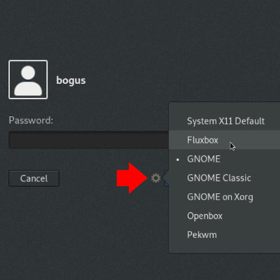
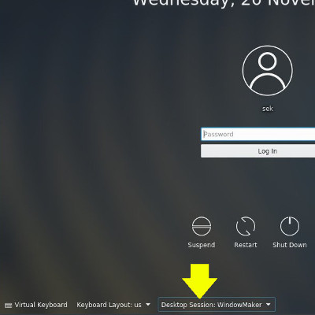
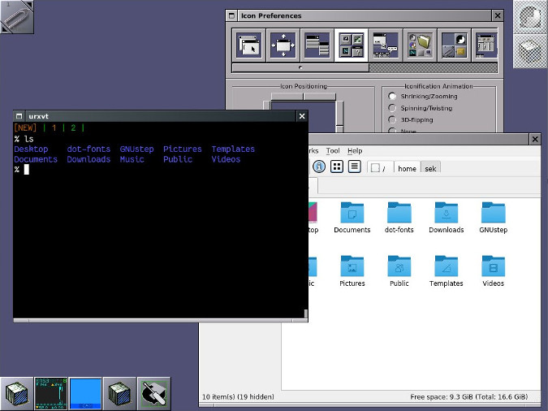

在 Linux 上使用 Window Maker 桌面
| 2019-12-07 12:53
本文是 24 天 Linux 桌面特别系列的一部分。让我们和 Window Maker 一起时光倒流，它为如今的用户实现了老式 Unix NeXTSTEP 环境。
在 Mac OS X 之前，有一个奇怪的闭源 Unix 系统，称为 NeXTSTEP。Sun Microsystems 后来将 NeXTSTEP 的底层设为开放规范，这使其它项目可以创建许多自由开源的 NeXT 库和组件。GNUStep 实现了许多 NeXTSTEP 库，而 Window Maker 实现了其桌面环境。
Window Maker 非常接近地模仿了 NeXTSTEP 桌面 GUI，并提供了一个有趣的视角，可以让人了解 80 年代末 90 年代初的 Unix 是什么样子的。它还揭示了窗口管理器（例如 Fluxbox 和 Openbox）背后的一些基本概念。
你可以从发行版的仓库中安装 Window Maker。要尝试它，请在安装完成后退出桌面会话。默认情况下，会话管理器（KDM、GDM、LightDM 或 XDM，这取决于你的设置）将继续将登录到默认桌面，因此登录时必须覆盖默认设置。
要在 GDM 上切换到 Window Maker：

在 KDM 上：

Window Maker 程序坞
默认情况下，Window Maker 桌面是空的，但每个角落都有几个程序坞。像在 NeXTSTEP 中一样，在 Window Maker 中，在程序坞区域，应用可最小化成图标后停靠，可创建启动器来快速访问常见应用，并且可运行微型的 “dockapp”。
你可以在软件仓库中搜索 “dockapp” 来试用 dockapp。它们常常是网络和系统监控器、音频设置面板、时钟等。这是在 Fedora 上运行的 Window Maker：

应用菜单
要访问应用菜单，请右键单击桌面上的任意位置。要关闭它，请再次单击鼠标右键。Window Maker 不是桌面环境（DE），而是一个窗口管理器（DM）。它可以帮助你安排和管理窗口。它唯一捆绑的程序是 WPrefs（或更常见的说法 Window Maker 偏好），它可帮助你配置常用设置，而应用菜单则提供对其他选项（包括主题）的访问。
运行什么应用完全由你决定。在 Window Maker 中，你可以选择运行 KDE 应用、GNOME 应用以及不被视为任何其他主流桌面应用的程序。你可以创建自己的工作环境，并且可以使用 Window Maker 对其进行管理。
via: https://opensource.com/article/19/12/linux-window-maker-desktop
作者：Seth Kenlon 选题：lujun9972 译者：geekpi 校对：wxy